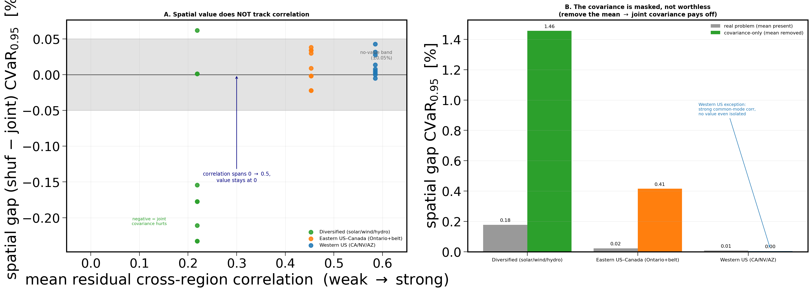
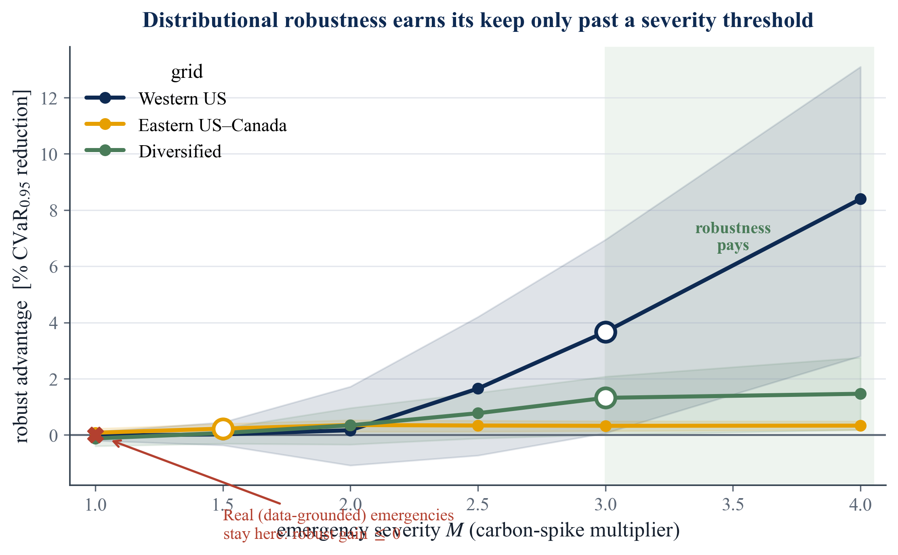

Data centers run a lot of flexible work (think model training and batch jobs) that can wait a few hours or run in a different region. Electricity is "cleaner" at some hours and places than others, because wind, solar, and hydro come and go. A carbon-aware scheduler moves compute toward the clean hours and clean regions to cut emissions.
The field already does this. The interesting question is how fancy the model needs to be. This project builds a real day-ahead scheduler and then prices three optional layers of sophistication, one at a time: (1) letting jobs migrate between regions, (2) modelling how regions' carbon levels move together, and (3) hedging against forecast error with distributionally robust optimization. The result is a clean separation: one layer pays, two mostly do not.
Every extra layer of modelling costs something: more data to estimate, more compute, more things that can go wrong. It is only worth it if it buys measurably better schedules. The literature mostly assumed that richer models help. This thesis measures it directly, and asks a value-first question: once you have a working scheduler, which extra layer is worth its price?
The yardstick throughout is CVaR₀.₀₅: the average emissions on the worst 5% of days. We care about the bad days, not the average day, because that is what a risk-averse operator wants to protect against.
Active inter-region migration cuts worst-day emissions by 4.0% to 9.9% over a like-for-like no-transfer baseline (Western 4.0%, Eastern 9.9%, Diversified 9.0%). The driver is simple: at each hour, one region is cleanest on average, so you ship work there. This is the headline saving, and it does not need any fancy dependence model.
Honest footnote: the migration mechanism itself is established practice in carbon-aware computing. The contribution is the careful, like-for-like measurement of what it is worth.
Across grids spanning the full range from near-independent to strongly correlated, modelling the joint structure adds essentially zero (below 0.4% of CVaR), and it survives a full battery of robustness checks. The co-movement is real, but it is dwarfed by the differences in average carbon, and the part that varies is the wrong shape for this kind of model to use.
Distributional robustness only starts to pay once a rare emergency makes a region's carbon spike by about 3× (the crossover M⋆≈3). Real worst-case emergencies across 17 zones only reach about 1.4×, so on observed conditions the simpler deterministic scheduler wins. Even at high severity the crossover survives careful multi-seed testing on only one grid, and only marginally.
Two clean experiments carry the argument. Both keep the optimizer fixed and change exactly one thing, so any difference is attributable to that one thing.
Fit the scheduler twice: once with the real cross-region links intact, and once with those links destroyed but each region's own pattern left perfectly intact. Compare the worst-day emissions. The difference is the value of the cross-region structure. It came out at essentially zero, and the whole thing was pre-committed (the analysis plan was locked in version control before the test data was ever read), so the result cannot be massaged after the fact.
This is the clever safeguard. We deliberately flatten each region's average carbon level, so the only signal left is the cross-region co-movement, and re-run. In this constructed world the dependence layer does pay (up to +1.46%). That is the test's positive control: it proves the test can detect value when value exists. So the zero we measure on real data is a genuine "no", not a blunt instrument that cannot see anything.

This project is unusual in that its central result is a careful null: a rigorous "this fancier thing does not actually help here", reported honestly rather than hidden. That is harder to attack than an inflated positive, and it is paired with a real, measured saving (the transfer lever) and a clear decision rule.

"Spatial" here means across the operator's geographically separate regions (sites), exactly as in the standard spatial-versus-temporal load-shifting distinction (move work to a cleaner place vs. a cleaner hour).
It does not mean distance-based spatial autocorrelation (no Moran's I, no variograms, no distance-decay), and it is not an electrical coupling of the grids, which need not be connected at all. The dependence we study is just the ordinary statistical cross-region correlation of carbon intensity, driven by shared weather and shared generation. The thesis says "cross-region correlation" for the statistic and reserves "spatial" for the across-locations decision.
The most novel and most defensible part is not any one equation (those are standard tools). It is a reusable recipe for pricing a modelling layer, plus the discipline that makes its answer trustworthy:
Together these turn "is this layer worth modelling?" from a matter of faith into a checkable, pre-committed measurement.
For a practitioner, the four-layer decision rule says where to spend effort and where not to:
| Layer | What it is | Verdict |
|---|---|---|
| 1 | Per-region carbon-aware scheduling (shift work to clean hours) | Deploy always |
| 2 | Active inter-region transfer (ship work to clean regions) | Deploy if you can migrate (this is the 4–9.9%) |
| 3 | Modelling the joint covariance / copula | Skip (adds ≈0) |
| 4 | Robustifying against forecast error | Only if you expect severe emergencies |
In money terms, for an Eastern US–Canada facility the transfer lever is worth on the order of $1.7M/yr in avoided carbon, while the covariance-modelling channel is about $37,000/yr and not even reliably positive. The value lives in the transfer decision and the mean forecast, not the second moment.
Every technical term in the thesis, in human words, with an everyday analogy where it helps.
Short, clear answers to the questions an examiner is most likely to ask.